MetaX Cookbook
This is the guidebook for the MetaX GUI Version. If you are using the CLI to analyze, We recommend that you read the documentation for each MetaX module for instructions on how to use it from the command line.
Overview
MetaX is a novel tool for the streamlined annotation of peptide sequences with taxonomic and functional information based on the lowest common ancestors. This versatile tool connects species-specific functions, enabling a more comprehensive analysis of the relationship between taxonomy and functionality. Furthermore, MetaX incorporates robust statistical modules for differential analysis of species-function contributions across distinct groups.
Contents
- MetaX Cookbook
- Overview
- Contents
- Get Start
- Module 1. Database Builder
- Module 2. Database Updater
- Module 3. Peptide Annotator
- Module 4. OTF Analyzer
- Restore Last TaxaFunc Object
- Developer Tools
- Enjoy MetaX
Get Start
- The main window of MetaX
- Click 'Tools Menu' to switch different tool

Module 1. Database Builder
- You have to build the database for the first time using Database Builder.
(Option 1) Build Database By MGnify Data
Make sure to download the correct database type corresponding to your data
(Option 2) Build Database By Own Data
- (1). Annotation Table: a TSV table(separated by a tab), and make sure the first column is protein name joined Genome by "_", e.g. "Genome1_protein1" and other columns are annotation information.

- (2). Taxa Table: a TSV table(separated by a tab), and make sure the first column is Genome name,e.g. "Genome1" and the second column is taxa.
-
Example Annotation Table:
Query Preferred_name EC KEGG_ko MGYG000000001_00696 mfd - ko:K03723 MGYG000000001_02838 hxlR - - MGYG000000001_01674 ispG 1.17.7.1,1.17.7.3 ko:K03526 MGYG000000001_02710 glsA 3.5.1.2 ko:K01425 MGYG000000001_01356 mutS2 - ko:K07456 MGYG000000001_02630 - - - MGYG000000001_02418 ackA 2.7.2.1 ko:K00925 MGYG000000001_00728 atpA 3.6.3.14 ko:K02111 MGYG000000001_00695 pth 3.1.1.29 ko:K01056 MGYG000000001_02907 - - ko:K03086 MGYG000000001_02592 rplC - ko:K02906 MGYG000000001_00137 - - ko:K03480,ko:K03488 -
Example Taxa Table:
Genome Lineage MGYG000000001 d_Bacteria;p_Firmicutes_A;c_Clostridia;o_Peptostreptococcales;f_Peptostreptococcaceae;g_GCA-900066495;s_GCA-900066495 sp902362365 MGYG000000002 d_Bacteria;p_Firmicutes_A;c_Clostridia;o_Lachnospirales;f_Lachnospiraceae;g_Blautia_A;s_Blautia_A faecis MGYG000000003 d_Bacteria;p_Bacteroidota;c_Bacteroidia;o_Bacteroidales;f_Rikenellaceae;g_Alistipes;s_Alistipes shahii MGYG000000004 d_Bacteria;p_Firmicutes_A;c_Clostridia;o_Oscillospirales;f_Ruminococcaceae;g_Anaerotruncus;s_Anaerotruncus colihominis MGYG000000005 d_Bacteria;p_Firmicutes_A;c_Clostridia;o_Peptostreptococcales;f_Peptostreptococcaceae;g_Terrisporobacter;s_Terrisporobacter glycolicus_A MGYG000000006 d_Bacteria;p_Firmicutes;c_Bacilli;o_Staphylococcales;f_Staphylococcaceae;g_Staphylococcus;s_Staphylococcus xylosus MGYG000000007 d_Bacteria;p_Firmicutes;c_Bacilli;o_Lactobacillales;f_Lactobacillaceae;g_Lactobacillus;s_Lactobacillus intestinalis MGYG000000008 d_Bacteria;p_Firmicutes;c_Bacilli;o_Lactobacillales;f_Lactobacillaceae;g_Lactobacillus;s_Lactobacillus johnsonii MGYG000000009 d_Bacteria;p_Firmicutes;c_Bacilli;o_Lactobacillales;f_Lactobacillaceae;g_Ligilactobacillus;s_Ligilactobacillus murinus
Module 2. Database Updater
- Update the built database, and extend more annotations.
-
(Option 1) By built-in mode:
-
there are some extended db we recommend, eg.
- [dbCAN_seq] (https://bcb.unl.edu/dbCAN_seq )
-
(Option 2) By TSV table
-
Extend the database by adding a new database to the database table.
-
Make sure the column separator is a tab.
-
Make sure the first column is the Protein name and the other columns are function annotation
Protein ID COG KEGG ... MGYG000000001_02630 Function 1 Function 1 ... MGYG000000001_01475 Function 2 Function 1 ... MGYG000000001_01539 Function 3 Function 1 ...
Module 3. Peptide Annotator
- Annotate the peptide to TaxaFunc before analyzing by Peptide Annotator

You have to provide:
-
Database: The database created by Database Builder
-
Peptide Table:
-
Option 1. From MetaLab-MAG results (final_peptides.tsv)
-
Option 2. You can also create it by yourself, make sure the first column is the ID(e.g. peptide sequence) and the second column is the proteins ID of MGnify (e.g. MGYG000003683_00301; MGYG000001490_01143) or your Database, and other columns are the intensity of each sample)
Sequence Proteins Intensity_V1_01 Intensity_V1_02 Intensity_V1_03 Intensity_V1_04 (Acetyl)KGGVEPQSETVWR MGYG000002716_01681;MGYG000000195_00452;MGYG000001616_00519;MGYG000002258_01582;MGYG000001300_00281;MGYG000002926_00231;... 714650 0 0 0 (Acetyl)KVIPELNGK MGYG000003589_01892;MGYG000001560_01812;MGYG000001789_00244;... 0 0 0 0 (Acetyl)LAELGAKAVTLSGPDGYIYDPDGITTK MGYG000001199_02893 0 0 0 0 (Acetyl)LLTGLPDAYGR MGYG000001757_01206;MGYG000004547_02135;MGYG000001283_00124;MGYG000004758_00803;MGYG000002486_00845;MGYG000000271_01269 0 307519 0 0 (Acetyl)MDFTLDKK MGYG000000076_01275;MGYG000003694_00879;MGYG000000312_02425;MGYG000000271_02102;MGYG000004271_00233;MGYG000002517_00542;MGYG000000489_01025 306231 0 0 1214497 -
-
Output Save Path: the location to save the result table
-
LCA Threshold: Find the LCA with the proportion threshold for each peptide. The default is 1.00 (100%)

Module 4. OTF Analyzer
When we get the Operational Taxa-Functions (OTF) Table after using the Peptide Annotator, we can use the OTF Analyzer to do downstream analysis.
1. Data Preparing
OTFs (Taxa-Functions) Table: Get from Peptide Annotator module
Meta Table: The first column is sample names, and the other columns are different groups. It would generate automatically meta info if the meta table were not provided (1. all samples are in the same group; 2. each sample is a group).
- Example Meta Table:
| samples | Individuals | Treatment | Sweetener |
|---|---|---|---|
| sample_1 | V1 | Treatment | XYL |
| sample_2 | V1 | Treatment | XYL |
| sample_3 | V1 | Treatment | XYL |
| sample_4 | V1 | Control | PBS |
| sample_5 | V1 | Control | PBS |
| sample_6 | V1 | Control | PBS |
There, we can simply load the example data by clicking the button.

Then, click Go to start the analysis.
2. Data Overview
Data Overview includes some basic information about your data, such as the number of taxa, functions and proportions.
We can set the threshold of linked peptides and the differences between them to plot the figure.
We Can Select different functions to plot the proportion distribution.
We can also filter some samples for downstream analysis.
3. Set TaxaFunc

Data selection
-
Function: select a function for downstream analysis ( None in the list means that we do not select any function, only focus on peptides and Taxa).
-
Function Filter Threshold: If a specific function within a protein group of a peptide comprises the highest proportion of function, it will be considered as the representative function for that peptide. By default, the threshold for this proportion is set at 1.00 (100%).

- Taxa Level: select a taxa level for downstream analysis(Life in the list means we do not filter by any taxa).
Sum Proteins Intensity
We can click Create Proteins Intensity Table to sum the peptide to the proteins if the Protein col is in the original table.
- Occuam's Razor and Anti-Razor are methods both available for the inferring shared peptide. 1. build the Rank of proteins. 2. choose the protein with a higher rank for the shared peptide.
- 4 methods to build the Protein Rank.
- unique_counts: use the counts of proteins inferred by unique peptide
- all_count: use the counts of all proteins
- unique_intensity: use the intensity of proteins inferred by unique peptide
- shared_intensity: use the intensity divided by shared times of peptide for each protein
Data preprocessing
- Data Preprocessing Before Summing Peptides: Perform data preprocessing first, then sum the peptides to calculate the intensity of each taxon, function and taxa-function pair.
- Data Preprocessing After Summing Peptides: Sum the peptides to calculate the intensity of each taxon, function and taxa-function pair first, then perform data preprocessing for each table.
There are several methods for detecting and handling outliers.
Two steps will be applied:
-
Outlier Detection: Users can select a method to mark outlier values as NaN. Then the rows
only contains NaN values and 0will be removed. The remaining NaN values will be handled in the next step. -
Outlier Handling: Users can choose a method to fill the remaining NaN values.
-
Outliers Detection:
-
IQR: In a group, if the value is greater than Q3+1.5*IQR or less than Q1-1.5*IQR, the value will be marked as NaN.
-
Missing-Value: Detect nan values in the data. If a value is nan, it will be marked as an NaN.
-
Half-Zero: This rule applies to groups of data. If more than half of the values in a group are 0, while the rest are non-zero, then the non-zero values are marked as NaN. Conversely, if less than half of the values are 0, then the zero values are marked as NaN. If the group contains an equal number of 0 and non-zero values, all values in the group are marked as NaN.
-
Zero-Dominant: This rule applies to groups of data. If more than half of the values in a group are 0, then the non-zero values are marked as NaN.
-
Zero-Inflated Poisson: This method is based on the Zero-Inflated Poisson (ZIP) model, which is a type of model that is used when the data contains a lot of zeros, more than what is expected in a standard Poisson model. In this context, the ZIP model is used to detect outliers in the data. The process involves fitting the ZIP model to the data and then predicting the data values. If the predicted value is less than 0.01, then the data point is marked as an outlier (NaN).
-
Negative Binomial: This method is based on the Negative Binomial model, which is a type of model used when the variance of the data is greater than the mean. Similar to the ZIP method, the Negative Binomial model is fitted to the data and then used to predict the data values. If the predicted value is less than 0.01, then the data point is marked as an outlier (NaN).
- Z-Score: Z-score is a statistical measure that tells how far a data point is from the mean in terms of standard deviations. Outliers are often identified as points with Z-scores greater than 2.5 or less than -2.5.
- Mahalanobis Distance: Mahalanobis distance measures the distance between a point and a distribution, considering the correlation among variables. Outliers can be identified as points with a Mahalanobis distance that exceeds a certain threshold.
In all methods, You can choose detection outliers by a meta column, and a meta to handle the outliers.
-
Outliers Imputation:
-
Drop: Remove peptides that contain any NaN values.
-
Original: Remove peptides that contain any NaN values.
-
Mean: Outliers will be imputed by the mean.
-
Median: Outliers will be imputed by the median.
-
KNN: Outliers will be imputed by KNN (K=5). The K-Nearest Neighbors algorithm uses the mean or median of the nearest neighbours to fill in missing values.
-
Regression: Outliers will be imputed by using IterativeImputer with regression method. This method uses round-robin linear regression, modelling each feature with missing values as a function of other features.
-
Multiple: Outliers will be imputed by using IterativeImputer with multiple imputations method. It uses the IterativeImputer with a specified number (K=5) of the nearest features.
You can choose the outliers Imputation by each group or by all samples.
-
Remove Batch Effect:
-
Here, you can choose a group as the batch effect, then use [reCombat] (https://github.com/BorgwardtLab/reComBat) for handling.
-
Data Transformation:
-
Log2, Log10, Square root transformation and Cube root transformation.
-
Data Normalization:
-
Standard Scaling (Z-Score), Min-Max Scaling, Pareto Scaling, Mean centring and Normalization by sum.
If you use [Z-Score, Mean centring and Pareto Scaling] data normalization, the data will be given a minimum offset again to avoid negative values.
- Drag the item's name to change the order of data preprocessing.
Then, click Go to create a TaxaFunc object for analysis.

Then we can check tables in Table Review part, and export it.
4. Basic Stats
PCA, Correlation and Box Plot

We can select meta groups or samples (default all) to plot PCA, Correlation, and Box Plot for [Taxa, Function, Taxa-Func, Peptide table, Protein table]


-
Setting and modifying the plot
-
Show or hide labels in the figure by checking the checkbox Show Labels
-
Select Sub Meta to plot with two meta
-
Select specific Groups with condition
e.g. : Select PBS, BAS and others groups only in Individual V1
- 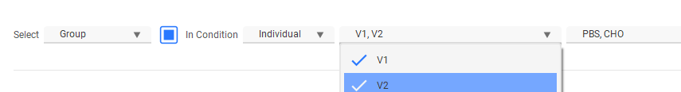
-
Select specific Samples to Analysis
-
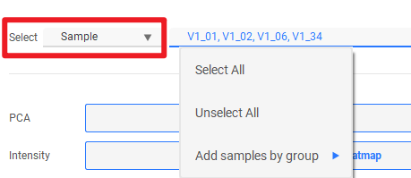
-
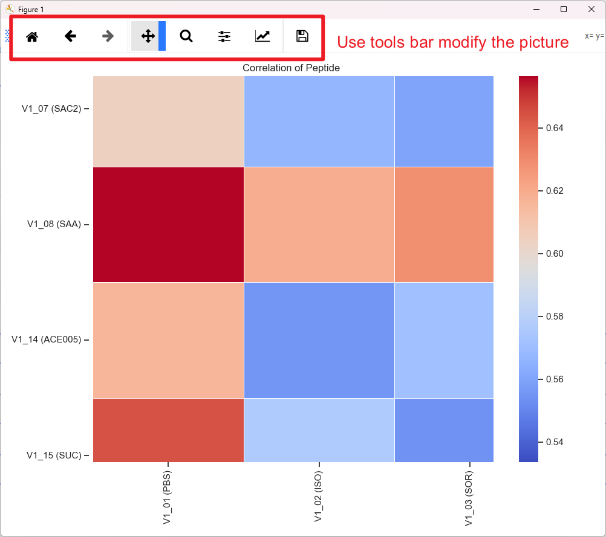
-
-
Number stats
-
We can plot the bar for the number for each table by groups or by samples

-
Taxa Specific
-
Alpha/Beta Diversity

- 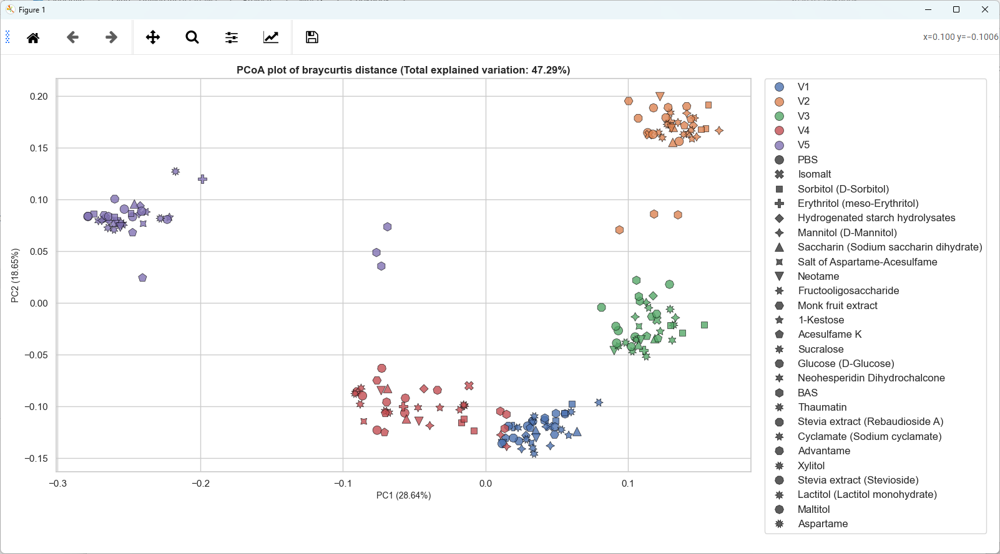
-
Sunburst
-
TreeMap
-
Sankey
- 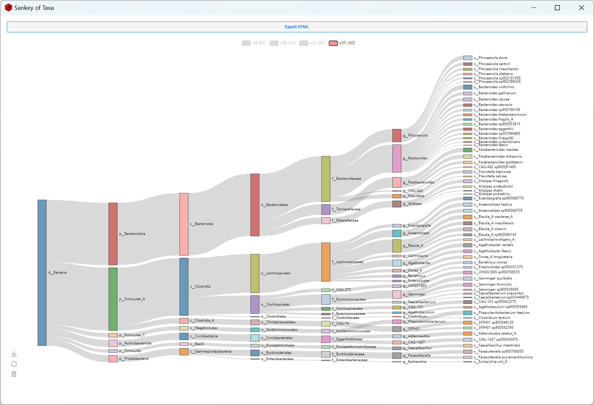


Heatmap and Bar Plot

- Select items(Taxa, Function, Taxa-Func and Peptide ) to plot:
- Add All Taxa, or select one we are interested in.

-
Add items to Top List: select the top items to plot by some statistical method.
-
Clicked filter with threshold will filter by the p-value of ANOVA and T-TEST and P-value and Log2FC of DESeq2 result (setting in the corresponding page).
-
Add a list for ploting:
-
Make sure one row one item

-
Setting:
-
Change the setting fit for your data.
- Rename Samples: Add group info to each sample name
- Rename Taxa: Only keep the last taxonomic level to reduce to name
-
Plot Mean: calculate the mean of each group before plotting
- For Heatmap
- Theme: The theme of the heatmap
- scale: Scale method of the heatmap
- Show All Labels: if show all labels in the heatmap
- For Bar
- Bar Ldg: Show the legend when plotting Bar
- Bar %: Transfer each col to percent when plotting Bar
- 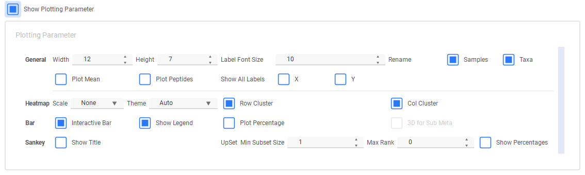
-
Plot all color maps to view by right click Theme

- 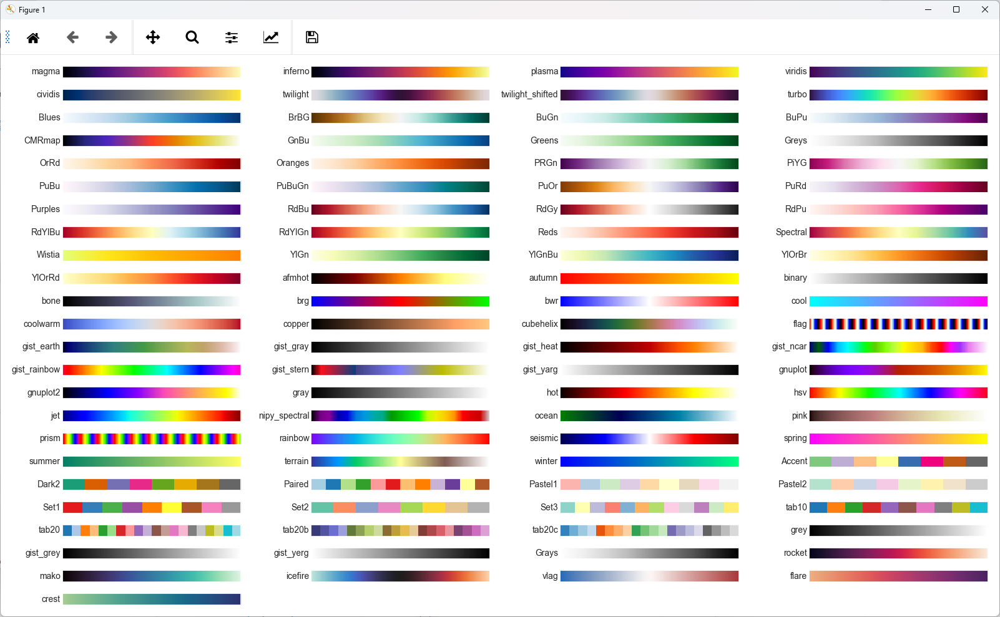
-
Plot:
-
Modify the pic to fit the window to get the Perfect picture:

-
Bar Plot:


- interactive function:

-
change to line plot:
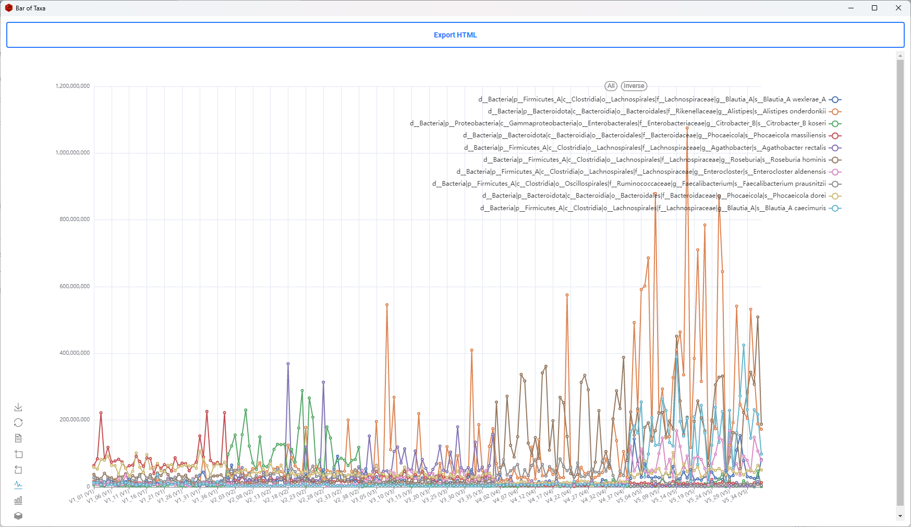 -
3D Bar plot
-
Plot 3D bar by selecting a sub meta.
-

-
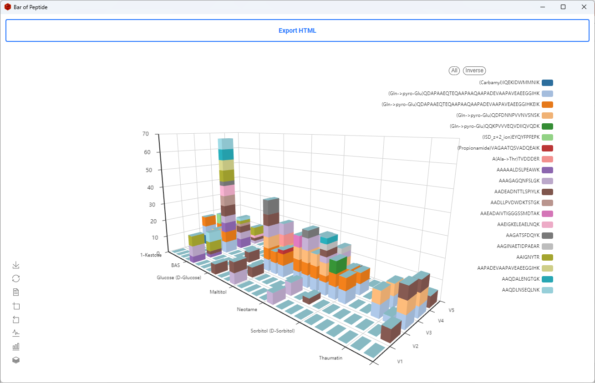
Peptide Query
- Query everything of a peptide

5. Cross Test
T-TEST
- Select 2 group stats T-Test for [Taxa, Function, Taxa-Func, Peptide table and Proteins Table]

ANOVA-TEST
- select some groups or all groups to ANOVA Test for [Taxa, Function, Taxa-Func and Peptide table]
Significant Taxa-Func
- Significant comparing enables us to find the result of The taxa between the two groups showing no significant differences, while the related functions are significantly different and function no significant but relted taxa significant.

Plot Corss Heatmap
- The result of the T-test and ANOVA Test will show in a new window
-
Plot Heatmap for results
-
Chose a Table to plot top differences heatmap or get the top table
- Taxa-Func cross heatmap:
- The orange cells mean in the corresponding function ( X-axis) and Taxa( Y-axis) are significantly different between groups.

-
Func(Taxa) Heatmap:
-
The colour shows the intensity of the significant Func(Taxa) between groups.
-
Significant Taxa-Func Heatmap:
-
The colored tiles represent the taxa which were not significantly different between groups but the related functions were.
TUKEY_TEST

-
Select a function:
-
Test the significant groups in this function.
-
Select a Taxon:
-
Test the significant groups in this taxon.
-
Select both function and taxon:
-
Test the significant groups in this function and this taxon.
-
Show Linked Taxa Only: only shows the taxa linked with the current function in the taxa combo box.
-
Show Linked Func Only: only shows the function linked with the current taxon in the function combo box.
Do not forget to click Reset Function Taxa List to reset all items after the filtering
-
Tukey result plot:
- The dots and lines show the difference in the mean value of the Tukey test

Group-Control TEST
- Dunnett's Test
Set a Group as "Control", then compare all groups to Control
-
Comparing in Each Condition: Select a meta such as individual, then compare groups to control in each individual.
-
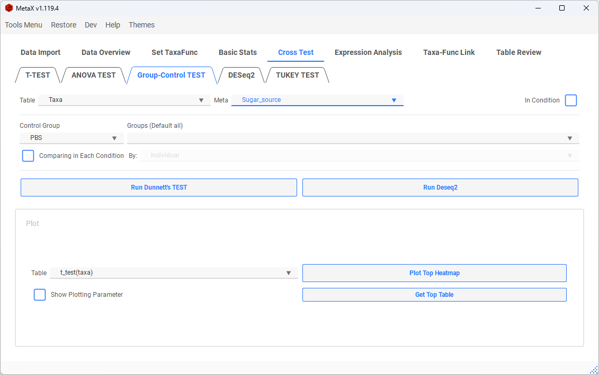
- Result of Dunnett's Test:
- T- Statistic value shown in the heatmap

6. Differential Analysis
Fold Change Calculation
- Select two groups to calculate FoldChange by [PyDESeq2]: https://github.com/owkin/PyDESeq2
- Select p-adjust, log2FC to plot
(Ultra-Up(Down): |log2FC| > Max log2FC)
-
Volcano:
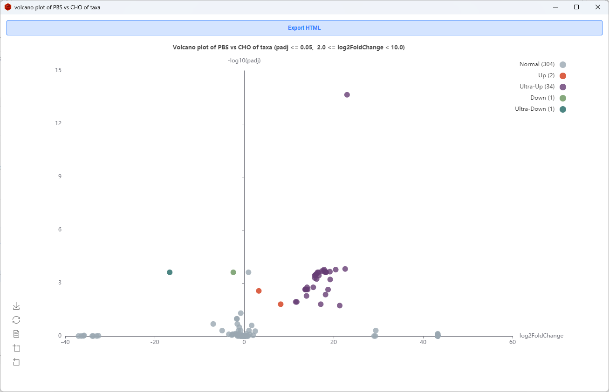 -
Sankey:
- The last node level is the functions linked to each Taxon (When plotting Taxa-Func)
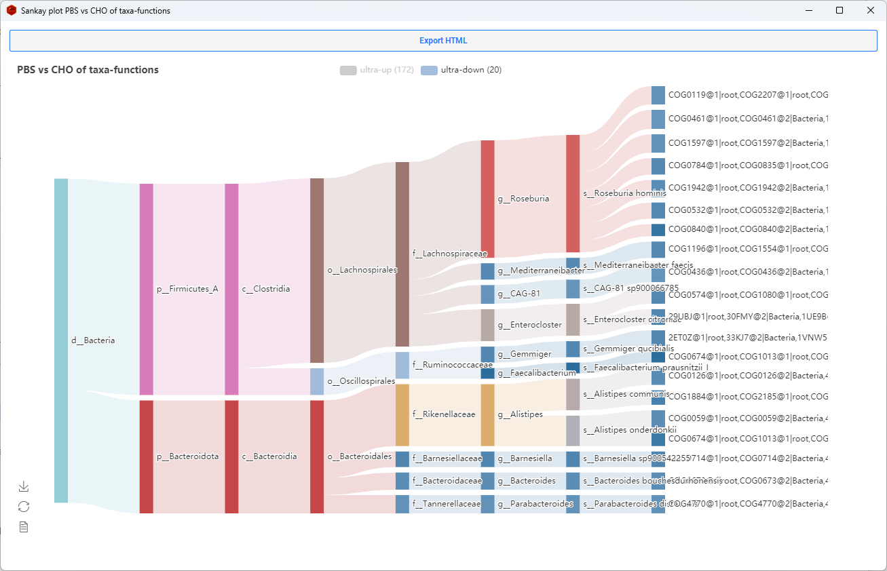
Co-Expression Networks
- select Groups or Samples to calculate the correlation and plot the network
- Slecet table, and set the method of correlation and threshold
- Add some items to the focus list (Optional)
-
Network Plot
-
The Red dots are focus items
- The depth of green represents the correlation value
- The size of the dot indicates the number of connections
Expression Trends
- Add items to the list window to plot the clusters with similar trends of intensity

-
Clusters plot (clustered by k-means)
-
The coloured line is the average
-
Select a specific cluster to plot interactive Lines or get the table
-
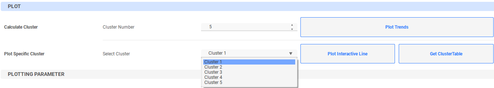
-
The dashed red line is the average
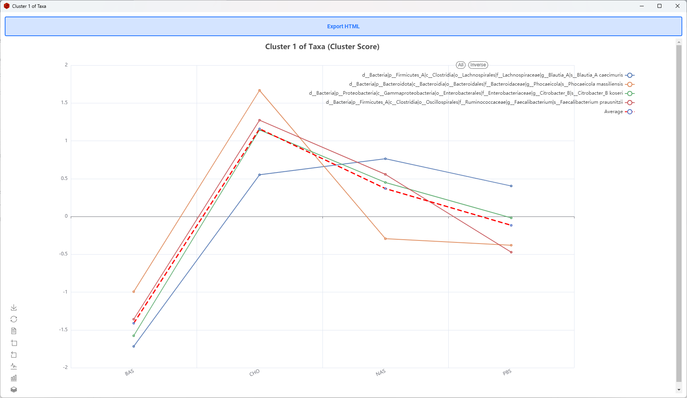
7. Taxa-Func Link
Taxa-Func Link Plot

-
Check all taxa in one function (or Check all functions in a taxon)
-
select a function, and click the button Show Linked Taxa Only
- Linked Number: The number shows how many taxa are linked in this function
- The number starts with Taxa: The number shows how many peptides are in this Taxa-Func
- Filter items of the Taxa and Func list

-
Plot Heatmap or Bar
-
Select some groups (Default all) to get the intensity of each taxon of this function
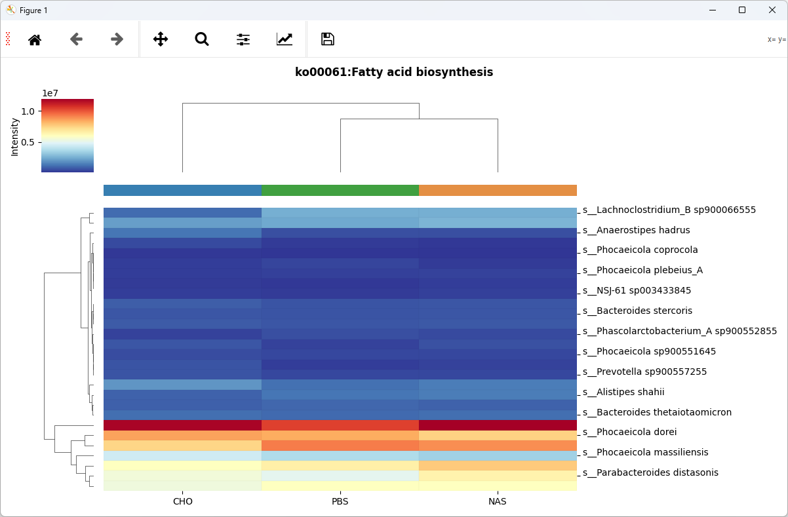
- Plot peptides in one Function of a Taxon


- Switch Bar to Stacked or not ( Line)

- Change Bar plot to Lines
### Taxa-Func Network
- Select some groups or samples (default all)
- add some taxa, func or taxa-func to focus the window (Optional)

-
Plot list only
- Checked the "Plot List Only" to show the items only in the list
-
Network plot
- The yellow dots are taxa, and the grey dots are functions, the size of the dots presents the intensity
- The red dots are the taxa we focused on
- The green dots are the functions we focused on
Restore Last TaxaFunc Object
- Once you create TaxaFunc, the TaxaFunc Object will save automatically, and you can restore it next time.
- Also, we can export the current MetaX to a file and reload it again.
- 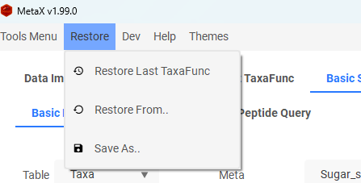
Developer Tools
-
Export Log
-
You can export the log file for debugging or reporting the issue.
-

-
Show or Hide the Console
-
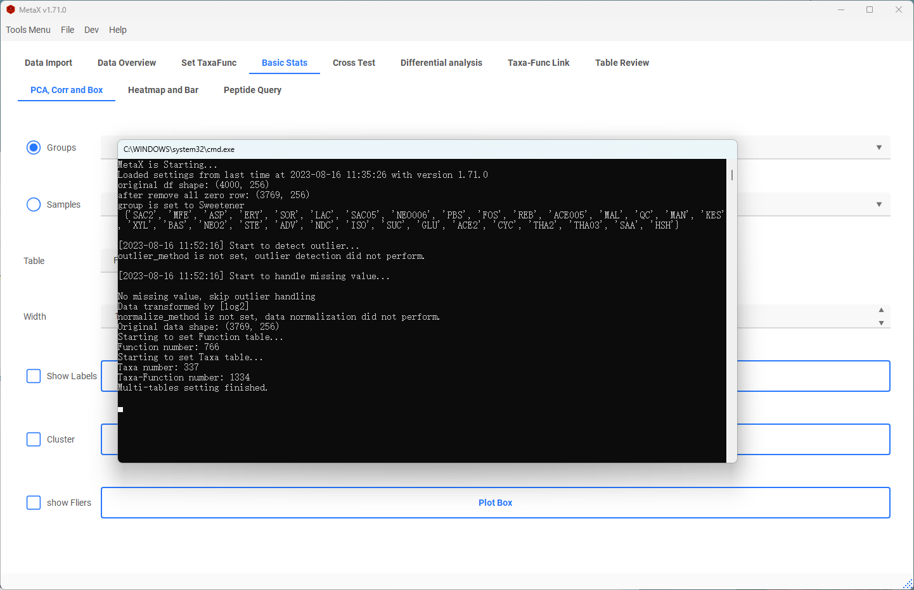
-
Any Table Mode
-
Any Table Mode enables us to use any matrix for basic statistical analysis in MetaX.
-

-
Settings
-
Check the box of Auto Check Update to enable or disable check update when launching
- Change to update from the stable version or beta version by settings
- 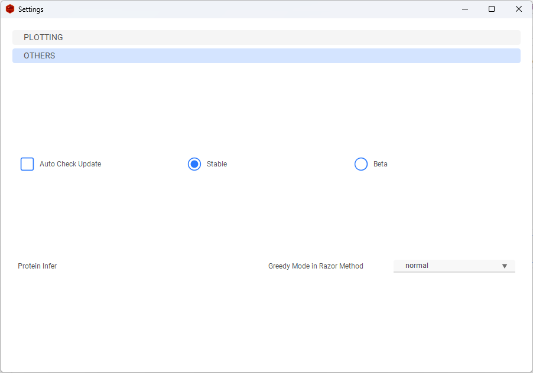
Enjoy MetaX
If you have any issues or suggestions, please New issue in my GitHub.